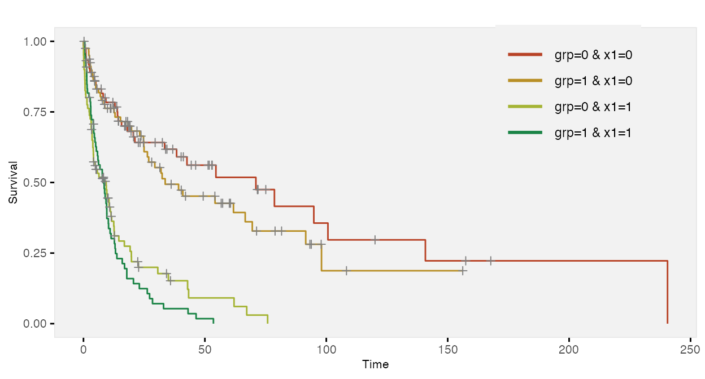

Time-to-event data, including both survival and censoring times, are created using functions defSurv and genSurv. The survival data definitions require a variable name as well as a specification of a scale value, which determines the mean survival time at a baseline level of covariates (i.e. all covariates set to 0). The Weibull distribution is used to generate these survival times. In addition, covariates (which have been defined previously) that influence survival time can be included in the formula field. Positive coefficients are associated with longer survival times (and lower hazard rates). Finally, the shape of the distribution can be specified. A shape value of 1 reflects the exponential distribution.
# Baseline data definitions def <- defData(varname = "x1", formula = 0.5, dist = "binary") def <- defData(def, varname = "x2", formula = 0.5, dist = "binary") def <- defData(def, varname = "grp", formula = 0.5, dist = "binary") # Survival data definitions sdef <- defSurv(varname = "survTime", formula = "1.5*x1", scale = "grp*50 + (1-grp)*25", shape = "grp*1 + (1-grp)*1.5") sdef <- defSurv(sdef, varname = "censorTime", scale = 80, shape = 1) sdef
## varname formula scale shape
## 1: survTime 1.5*x1 grp*50 + (1-grp)*25 grp*1 + (1-grp)*1.5
## 2: censorTime 0 80 1The data are generated with calls to genData and genSurv:
# Baseline data definitions dtSurv <- genData(300, def) dtSurv <- genSurv(dtSurv, sdef) head(dtSurv)
## id x1 x2 grp survTime censorTime
## 1: 1 0 0 0 23.173 6.326
## 2: 2 0 1 1 58.223 68.533
## 3: 3 1 1 0 26.873 157.451
## 4: 4 0 1 1 83.711 40.787
## 5: 5 0 1 1 6.423 33.728
## 6: 6 1 1 1 8.665 26.331## grp x1 V1
## 1: 0 0 234.4
## 2: 0 1 13.6
## 3: 1 0 42.7
## 4: 1 1 8.8Observed survival times and censoring indicators can be generated by defining new fields:
cdef <- defDataAdd(varname = "obsTime", formula = "pmin(survTime, censorTime)", dist = "nonrandom") cdef <- defDataAdd(cdef, varname = "status", formula = "I(survTime <= censorTime)", dist = "nonrandom") dtSurv <- addColumns(cdef, dtSurv) head(dtSurv)
## id x1 x2 grp survTime censorTime obsTime status
## 1: 1 0 0 0 23.173 6.326 6.326 FALSE
## 2: 2 0 1 1 58.223 68.533 58.223 TRUE
## 3: 3 1 1 0 26.873 157.451 26.873 TRUE
## 4: 4 0 1 1 83.711 40.787 40.787 FALSE
## 5: 5 0 1 1 6.423 33.728 6.423 TRUE
## 6: 6 1 1 1 8.665 26.331 8.665 TRUE# estimate proportion of censoring by x1 and group dtSurv[, round(1 - mean(status), 2), keyby = .(grp, x1)]
## grp x1 V1
## 1: 0 0 0.63
## 2: 0 1 0.17
## 3: 1 0 0.35
## 4: 1 1 0.05Here is a Kaplan-Meier plot of the data by the four groups:
